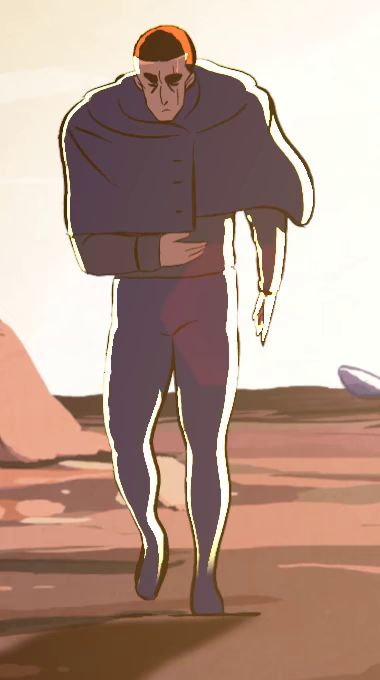
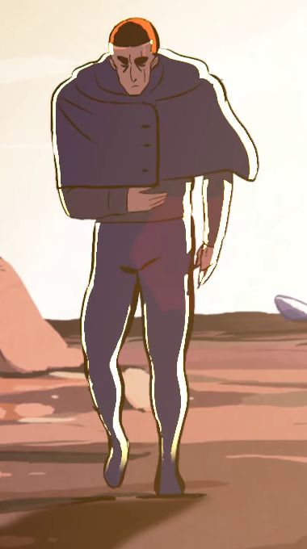
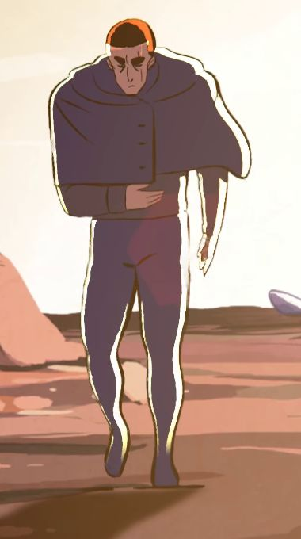
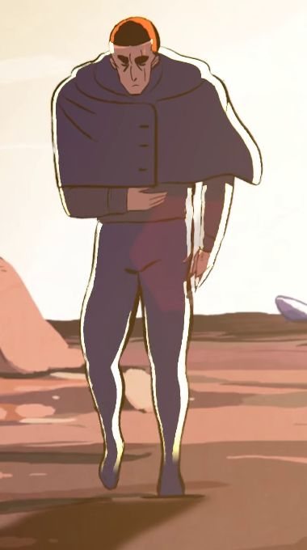
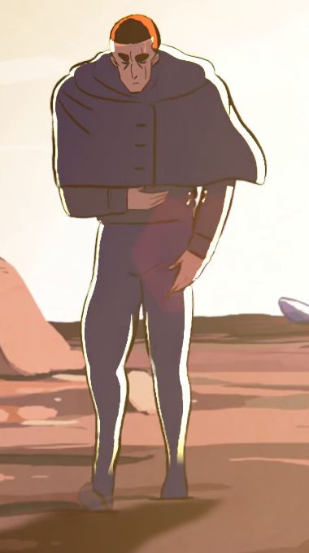

A plugin for DaVinci Resolve Studio
Drawn on twos.
Played on ones.
Anime holds every drawing for two or three frames. Eternal2x finds the real drawings in a shot, has the RIFE network draw the frames in between, and puts the result on the track above your clip.
Resolve Studio 18+ · Windows 10 and 11 · macOS 12+
The timing sheet
One walk,
six frames.
Drawn on twos, every drawing stays on screen for two frames, so half the frames repeat. Eternal2x leaves each drawing on the frame it was drawn for and puts a new in-between where each repeat was.
| Version | Frame1 | Frame2 | Frame3 | Frame4 | Frame5 | Frame6 |
|---|---|---|---|---|---|---|
| As drawn3 drawings |  |
 |
||||
| Eternal2x3 drawings + 3 new |  |
 |
 |
How it works
Three
buttons.
Eternal2x is a panel inside Resolve, opened from Workspace, Scripts. It works on the clip under your playhead, and only on the part of the file your edit uses.
-
01
Analyse
The panel reads the clip and tells you what it found, like
66 frames, 34 unique drawings. Animated on 2s.Nothing changes yet, so it's safe on anything. -
02
Smooth Clip
It renders in the background with a progress bar and the time left, and Resolve stays usable. On Windows the in-betweens are drawn on the GPU.
-
03
Show Original
The result lands on the lowest free track above your clip, on the same frame, at the same length and frame rate. Show Original switches it off and on.
The film
21 seconds
in Resolve.
The walk as drawn, then from Eternal2x, the panel doing its work in DaVinci Resolve Studio 20.3.1, and the render sitting on the track above the original. Sound on.
Footage from Hero by the Blender Foundation, CC BY 4.0, edited. Footsteps, clicks and paper sounds by Kenney, CC0.
What it won't do
No invented
motion.
Put anime straight through a frame interpolator and little changes, because most neighbouring frames are the same drawing. Eternal2x finds the real drawings first and fills only the gaps between them.
Footage already on ones is left alone.
If no frame repeats, there is nothing to rebuild. Analyse says so and stops.
Held poses stay held.
A drawing held for a beat keeps its full length instead of drifting.
Cuts stay hard.
It never blends across a scene change, which would show both shots at once.
Offline, nothing is faked.
The first run needs a connection to fetch the AI model. Without it, every drawing is kept as drawn rather than warped, and the panel says why.
Spec sheet
What you
need.
One installer sets up the Python packages, copies the panel into Resolve and writes its settings. Step by step guides are on the help page.
- Resolve
- DaVinci Resolve Studio 18 or newerSince 19.1 the free edition blocks script panels like this one.
- System
- Windows 10 or 11, or macOS 12 or newer
- Python
- 3.10 to 3.14, free from python.org3.15 is too new for the AI runtime. Older Macs need an older Python. See the Mac guide.
- In-betweens
- RIFE 4.25, run on your own machineOn the GPU through DirectML on Windows, on the CPU elsewhere. The first run downloads about 50 MB.
- Upscale
- 2x with Resolve's own Super Scale
- Output
- Image sequence, MP4 or MKVLossless image sequence by default, 8-bit RGB.
- Updates
- Checked each time the panel opensEvery download is verified against its checksum before it's applied.
- Price
- Free
Put it on
your timeline.
One installer does the setup. You need Python 3.10 to 3.14 first.